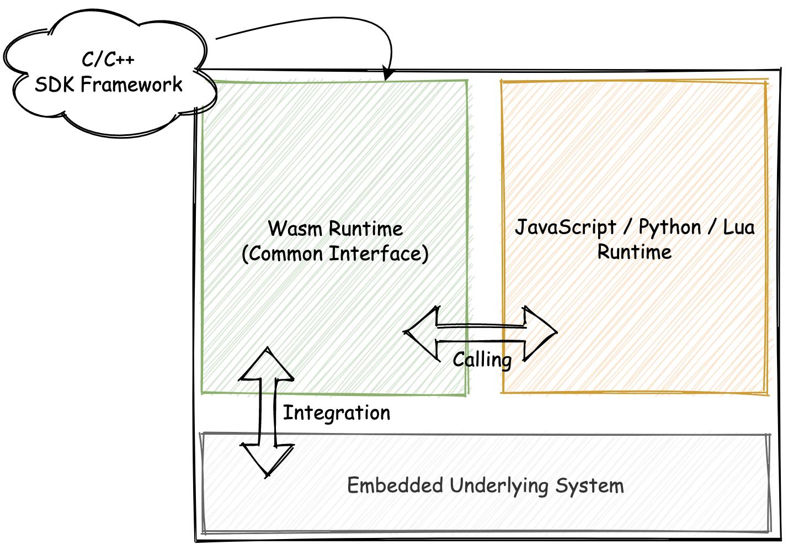
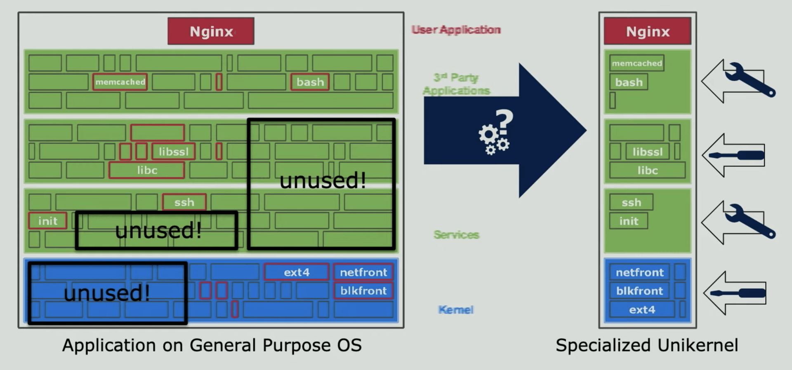
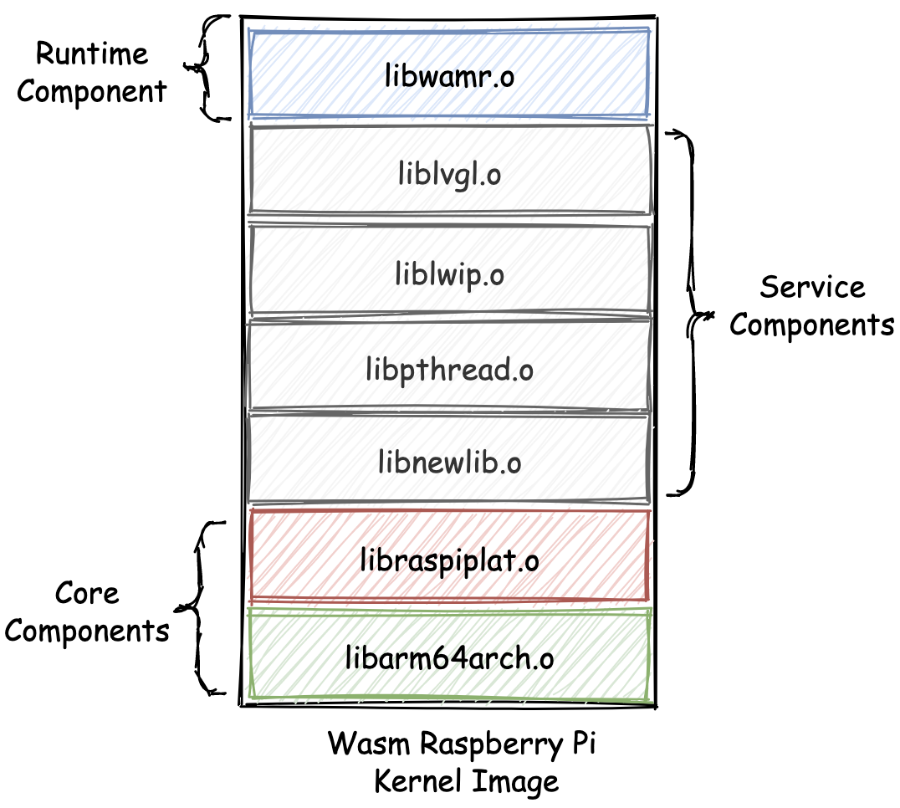
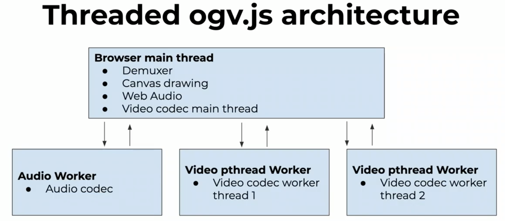
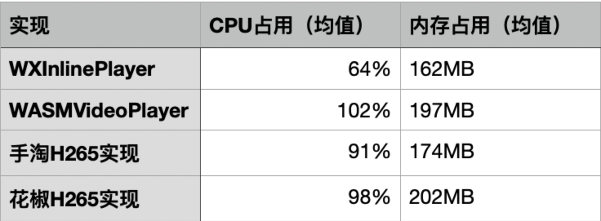

- 00 开篇词 我们为什么要了解 WebAssembly？.md.html
- 01 基础篇：学习此课程你需要了解哪些基础知识？.md.html
- 02 历史篇：为什么会有 WebAssembly 这样一门技术？.md.html
- 03 WebAssembly 是一门新的编程语言吗？.md.html
- 04 WebAssembly 模块的基本组成结构到底有多简单？.md.html
- 05 二进制编码：WebAssembly 微观世界的基本数据规则是什么？.md.html
- 06 WAT：如何让一个 WebAssembly 二进制模块的内容易于解读？.md.html
- 07 WASI：你听说过 WebAssembly 操作系统接口吗？.md.html
- 08 API：在 WebAssembly MVP 标准下你能做到哪些事？.md.html
- 09 WebAssembly 能够为 Web 前端框架赋能吗？.md.html
- 10 有哪些已经投入生产的 WebAssembly 真实案例？.md.html
- 11 WebAssembly 在物联网、多媒体与云技术方面有哪些创新实践？.md.html
- 12 有哪些优秀的 WebAssembly 编译器与运行时？.md.html
- 13 LLVM：如何将自定义的语言编译到 WebAssembly？.md.html
- 14 有哪些正在行进中的 WebAssembly Post-MVP 提案？.md.html
- 15 如何实现一个 WebAssembly 在线多媒体处理应用（一）？.md.html
- 16 如何实现一个 WebAssembly 在线多媒体处理应用（二）？.md.html
- 17 如何实现一个 WebAssembly 在线多媒体处理应用（三）？.md.html
- 18 如何进行 Wasm 应用的调试与分析？.md.html
- 19 如何应用 WASI 及其相关生态？.md.html
- 20 总结与答疑.md.html
- 结束语 WebAssembly，未来已来.md.html
- 捐赠
11 WebAssembly 在物联网、多媒体与云技术方面有哪些创新实践？
你好，我是于航。
我们继续接着上节课的内容，来一块看看 Wasm 在应用实践领域有哪些“新鲜事”。今天我们要来聊的是 Wasm 在物联网、多媒体与云技术领域内的一些创新性实践。我们一直说 Wasm 虽然“出身”于 Web，但实际上却也可以 out-of-web。
Wasm 本身作为一种新的虚拟机字节码格式，其使用场景从来都不会被仅仅限制在某个领域。鉴于 Wasm 在这些领域内的相关实践数量众多，因此在本节课里，我们仅挑选一些比较典型且具有一定现实意义的创新性实践来进行介绍。同时也欢迎你在评论区和我进行互动，补充一下你所知道的 Wasm 在这些或者其他领域内的相关实践。
物联网（IoT）
物联网（Internet of Thing），我们一般简称为 IoT。是指相对于传统的手机、笔记本电脑等大型电子设备来说，其可使用资源被有所限制（比如单核的 CPU、仅有几百 KB 的内存和硬盘容量、有限的网络上传速度，或仅需纽扣电池进行供电等）的小型嵌入式设备。
因此，相较于为传统 PC计算机等大型电子设备开发应用程序而言，为嵌入式设备开发程序则需要特殊的编程实践方法，以用来应对有限的软硬件资源。
统一的编程接口
在 IoT 刚刚走入人们视野的最初几年，人们通常只能够使用 C/C++ 甚至是汇编语言，来为这些物联网嵌入式设备编写应用程序。
后来随着互联网技术的不断发展，以及从易用性、流行程度、生态系统等其他多方面进行考虑，诸如 JavaScript、Lua 以及 Python 等高抽象层次的脚本语言，也被逐渐应用在嵌入式设备上，“性能”已经不再成为人们选择嵌入式设备编程语言时所要考虑的第一要素。
但现实情况是，并非所有的嵌入式设备，都可以直接满足这些高级编程语言的使用要求。由于不同语言的运行时差异性，并且考虑到实现成本，嵌入式设备无法独立地为每种语言运行时都提供单独的编程接口（一般为 C/C++），以供其与嵌入式设备进行交互。此时 Wasm 字节码的高密度、高性能以及可移植性，便使得人们有了可尝试的新选择。
如下图所示，通过将 Wasm 字节码作为嵌入式设备的中间媒介表示形式（IR），来向所有的外部高级编程语言宿主运行时，提供统一的基于 Wasm 的编程接口。对相关 Wasm 编程接口的调用，将会由嵌入式设备上的独立 Wasm 运行时来执行。

这样，我们不仅可以直接利用已有的 C/C++ 编程接口（编译到 Wasm 字节码），同时还能够向外界的宿主运行时提供统一的编程接口调用方式。关于这两者之间的具体交互方式，你可以通过 Web 浏览器中 JavaScript 与 Wasm 二进制模块之间的交互方式来进行类比。当然，细节的实现依据不同的编程语言将会有所不同。
微内核 - Unikernel
另一个比较有意思的想法源自于一个曾在 IoT ，或者说嵌入式领域比较火的概念 — “微内核”。
如下图左侧所示，在传统的操作系统内核架构中，有着用来支持各类功能的底层驱动、框架、接口以及组件库。实际上对于具有某一特定功能的嵌入式设备来说，其中的大部分内核底层功能都没有存在的必要性，但却仍然占用着一部分的硬件资源。
是否可以只把整个嵌入式硬件需要使用的内核底层组件单独提取出来，使其成为一个面向某一类特定功能或应用的专有内核呢？答案是当然可以，这就是“微内核”的概念。

相较于传统的类 Unix 操作系统内核（一般称之为宏内核），微内核有着许多的优势，比如：更快的启动速度、更小的 ROM 体积，以及更高的硬件资源使用率。 Unikraft 便是这样一款可以用来制作微内核的系统工具。
关于 Unikraft 的更多信息，你可以点击上一段文字中的超链接进行参考。你现在需要知道的就是，通过使用 Unikraft，我们可以构建一个基于 Wasm 运行时的操作系统微内核。
相较于其他基于 JavaScript 等高级编程语言运行时（比如 V8）构建的微内核而言，基于 Wasm 的微内核将有着更高的程序执行效率、更少的硬件资源占用率，以及更快的操作系统冷启动速度。这都是源自于 Wasm 本身作为一种 V-ISA 所带来的优势。
比如我们可以为“树莓派（一种嵌入式开发板）”，构建一个拥有如下“服务栈”的 Wasm 微内核。在这个微内核中，除了最下层必要的内核组件以外，我们还为其添加了用于支持“图形界面”、“多线程”、“网络通信”以及“C 标准库”等功能的必要组件。
位于最上层的便是由 Wasm 虚拟机（WAMR）构建出的“执行层”。在这里，我们可以通过提供 Wasm 字节码的方式，来与整个微内核的其他组件功能进行交互。

在这样的一个架构中，整个微内核的大小只有 468KB。当上述的 Wasm 微内核被运行在一个普通的树莓派开发板上时，整个内核的启动时间仅需要 20 毫秒。并且内存资源的使用率以及应用程序代码的大小，也都处在一个对于嵌入式设备来说十分可观的量级下。这样的系统冷启动速度以及资源使用率，对于 Serverless 相关的应用领域来说，不得不引起关注。
多媒体（Multimedia）
Wasm 在“多媒体”领域内的实践可谓是数不胜数。可以说，“音视频及图像的在线处理”是 Wasm 在基于现阶段 MVP 标准的情况下，其可以大显身手的一个重要场景。因为对多媒体资源的处理始终离不开“编解码”的需求，编解码过程本身又是一个“计算密集”的数据处理过程。
就目前的大多数 Web 浏览器实现而言，当 Wasm 不再需要频繁地与 JavaScript 环境之间传递大量数据时，JavaScript 引擎便可以按照“最优”的策略来执行 Wasm 代码，从而减少在两个上下文环境间相互切换时所产生的性能损耗。这便给予了 Wasm 在“终端密集计算”这个场景中以机会，于是基于 Wasm 的 Web 端音视频处理方案便如雨后春笋般涌现。
ogv.js
ogv.js 是一个由“维基百科”技术团队开发的，可以在 Web 浏览器中使用的多媒体播放器。它能够播放如 “Ogg”、“WebM” 以及 “AV1” 等多种音视频格式。如下图所示为其整体架构设计。

可以看到，位于主线程中的 Demuxer 作为整个播放器的核心组件，主要用于解码并提取各类型媒体文件中的音视频内容。位于各个工作线程中的音视频解码过程，也同样属于整个播放器的核心逻辑。因此，这两部分计算密集的逻辑便交由 Wasm 来进行处理。
同时为了保证性能和兼容性，ogv.js 还使用了 ASM.js 实现来作为 Wasm 的一个兼容性补偿，以便在一些不支持 Wasm 的浏览器中，通过 ASM.js 来进行加速。在最不济的情况下，ogv.js 便可以直接退回到 JavaScript 的方案（将 ASM.js 代码视作普通 JavaScript 来执行）。
不仅如此，ogv.js 还可以同时利用浏览器支持的 “Multi-Cores Worker” 特性（每一个工作线程都使用 CPU 上的一个独立核心），来对整个解码过程进行加速。与此同时，随着 Wasm 最新的 SIMD 标准被越来越多的浏览器实现，ogv.js 在处理视频像素矩阵以及各类相关编解码工作时，还可以利用该特性来做到进一步的加速。
另一个值得讲的便是 ogv.js 对第三方编解码库（libogg、libvorbis、libtheora 等等）的复用。ogv.js 在构建时，直接使用了已有的一些 C/C++ 编解码库来完成对音视频流的编解码过程，而没有选择自己从头开始编写这部分功能。因此，得益于 Emscripten 提供的对 C/C++ 代码到 ASM.js / Wasm 代码的转译功能，ogv.js 的整个开发过程变得更加方便快速。
WXInlinePlayer
同 ogv.js 类似，WXInlinePlayer 也是一个 Web 端的音视频播放器。不过相较于 ogv.js 本身基于“维基百科”自身业务需求的出身而言，WXInlinePlayer 的出身则显得更加“有趣”。
国内的大多数移动端浏览器厂商（或提供者）通常会在其自家浏览器内，对 HTML5 网页中基于<video>标签进行的视频播放行为，采用很多的 “魔改”。比如：使用单独的窗口来播放视频、视频播放完毕后推送广告信息等等。
在某些视频无法正常播放的情况下，开发者甚至无法捕捉到任何的异常信息。而这便为那些需要提供一致性用户体验的产品设置了阻碍。WXInlinePlayer 的诞生便源于对此的迫切需求。
同大多数的<video>标签替代方案一样，WXInlinePlayer 会自行解码收到的 FLV 视频流，然后再通过 WebGL 与 WebAudio 的方式，来将视频画面与音频播放出来。
在实际的解码过程中，WXInlinePlayer 便会利用 Wasm 进行加速。同样地，它也使用了 ASM.js 作为 Wasm 的降级方案。在解码时，也同样利用了诸如 “de265” 等现有的 C/C++ 解码库。
相较于大多数公司采用的“直接将 FFmpeg 编译到 Wasm 来进行视频解码”的解决方案，WXInlinePlayer 会相对更加轻量，且在某种程度上解码的效率更高。
FFmpeg 由于其自身的代码库体积过大，导致 Web 浏览器在实际加载和实例化 Wasm 模块时，会消耗更多的时间。并且 FFmpeg 天生并非针对 Web 场景，因此其内部的很多优化策略可能无法直接在 Web 平台上使用。而 WXInlinePlayer 仅把涉及到解码和 Remux 的部分单独提取出来，因此可以有效地针对某个解码方案进行优化。
你可以通过下图来参考一下， WXInlinePlayer 与其他同类型方案的视频播放性能对比结果。

云（Cloud）
最后，我们来看看 Wasm 在云技术领域的一些实践。
注：由于我对云原生领域并不是特别熟悉，但我还是很想和你分享一些在该领域内比较重要的 Wasm 尝试。关于这些创新项目的更多内容，你可以参考 GitHub 上的相关文档，也欢迎你在评论区和我一块探讨。
Krustlet
Kubernetes 是目前云原生领域中，最常用的一种容器编排引擎。Kubernetes 由 Google 开源，通过它我们可以方便地管理云平台上众多物理主机中运行的容器化应用。Kubernetes 使容器化应用的部署和管理变得更加简单和高效。
而 Krustlet 旨在作为一个 Kubernetes Kubelet ，以运行在整个 Kuberneters 集群中的各个服务节点上。它的设计与 Virtual Kubelet 十分类似，会在 Kubernetes API 事件流上监听新的 Pods。
根据指定的 Kubernetes Toleration，Kubernetes API 能够将特定的 Pod 调度到 Krustlet 上，然后将它们运行在基于 WASI 的 Wasm 运行时上。因此借助于 Krustlet，我们可以方便快捷地在 Kubernetes 集群中部署 Wasm 应用。
Embly
Embly 是一个基于 Wasm 的 Serverless 框架。它使得我们可以在服务器上执行 Wasm 字节码（函数），并访问完成任务所需要的网络和系统资源。Embly 通过一种“声明式”的配置文件来定义不同的 Wasm 服务。配置文件中包含有对服务函数的编译、部署以及声明所需依赖等多种任务流程的配置项。
不仅如此，Embly 还实现了 Actor 模型（一种并发计算模型），这样可以允许一个 Wasm 函数生成另一个 Wasm 函数，并且函数之间可以相互传递数据。通过这种方式，Embly 足以应对更加复杂的计算模式。同时，基于 Wasm 模块的沙箱机制也使得 Embly 可以支持多租户的特性。
一个简单的 Embly 示例配置文件如下所示。
function "hello" {
runtime = "rust"
path = "./hello"
}
gateway {
type = "http"
port = 8765
route "/" {
function = "${function.hello}"
}
}
在这个文件中，我们定义了一个名为 “hello” 的函数，以及一个 HTTP 类型的网关。在网关的配置项中通过 “route” 字段，我们可以声明所有通过端口 8765 发送进来的，对根目录（“/”）的HTTP 请求，都会被转发到函数 “hello” 的对应实现中进行处理。
在 Embly 中使用到的所有 Wasm 函数，均需要由 Rust 语言进行编写。在函数定义中，我们可以使用由 Embly 提供的用于访问各类系统资源（包括 HTTP 对应的请求和响应）的数据类型。
总结
好了，讲到这，今天的内容也就基本结束了。最后我来给你总结一下。
在本节课中，我们主要介绍了 Wasm 在“物联网”、“多媒体”以及“云”这三个技术领域内的一些创新性实践。当然，限于篇幅和我所掌握的知识，我无法将每个领域内的每个 Wasm 实践项目都解释得十分清楚。
但无论如何，我希望通过这节课，能够给你这样一种认知，即：随着将近 5 年时间的发展，对 Wasm 的应用实践已经不再单单局限于 Web 平台，而是已经开始向各种各样的其他领域进军。虽然其中的大部分实践项目都还处于“实验性”阶段，但我相信，距离它们可以被真正使用在生产环境的那一天并不遥远。
课后思考
最后，我们来做一个思考题吧。
你最期待 Wasm 能够在哪个应用/技术领域内有所创新？
今天的课程就结束了，希望可以帮助到你，也希望你在下方的留言区和我参与讨论，同时欢迎你把这节课分享给你的朋友或者同事，一起交流一下。
© 2019 - 2023 Liangliang Lee. Powered by gin and hexo-theme-book.